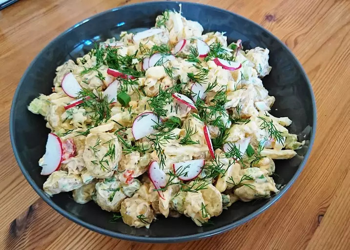

Restaurant-style Potato Salad

Description
This is a traditional and easy-to-make russet potato salad recipe.
Ingredients
- 2 pounds russet potatoes
- 1 cup mayonnaise
- 4 teaspoons sweet pickle relish
- 4 teaspoons white sugar
- 2 teaspoons chopped white onion
- 2 teaspoons prepared mustard
- 1 teaspoon white wine vinegar
- 1 tablespoon minced celery
- 1/2 teaspoon shredded carrot
- 1/4 teaspoon dried parsley
- 1/4 teaspoon ground black pepper
- salt to taste
Directions
- Bring a large pot of salted water to a boil. Add potatoes and cook until tender but still firm, about 15 minutes. Drain, cool, and chop.
- In a large bowl, combine potatoes, mayonnaise, sweet pickle relish, sugar, onion, mustard, vinegar, celery, pimentos, carrot, parsley, pepper, and salt. Mix well, chill and serve.
Nutritional Information
| Calories |
Fat |
Carbs |
Protein |
| 298 |
22g |
24g |
3g |
back to recipes